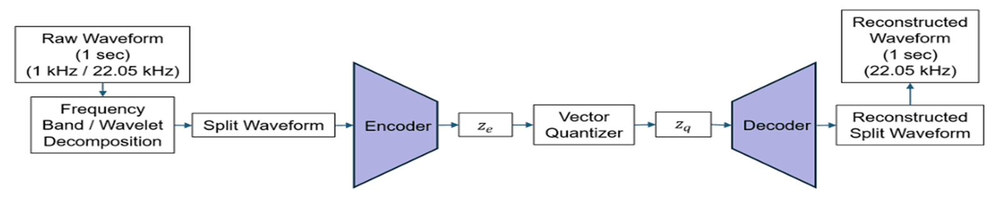
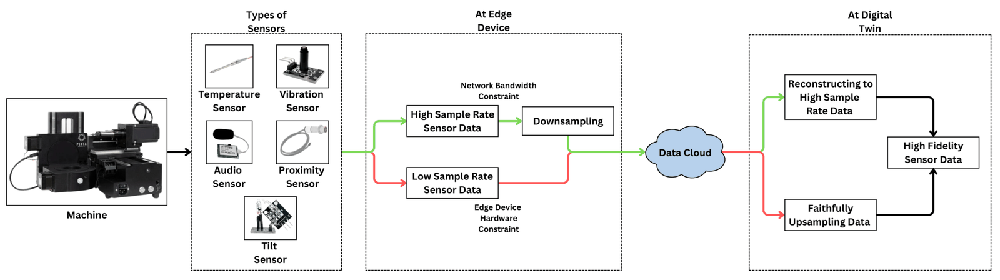
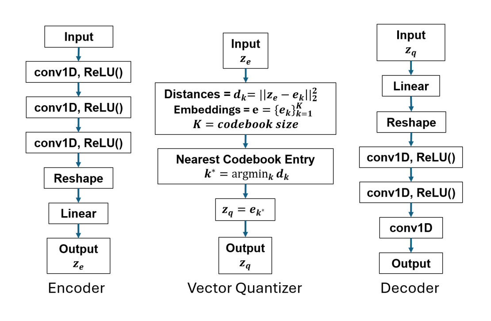
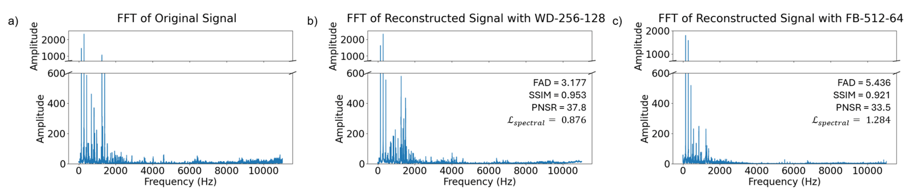
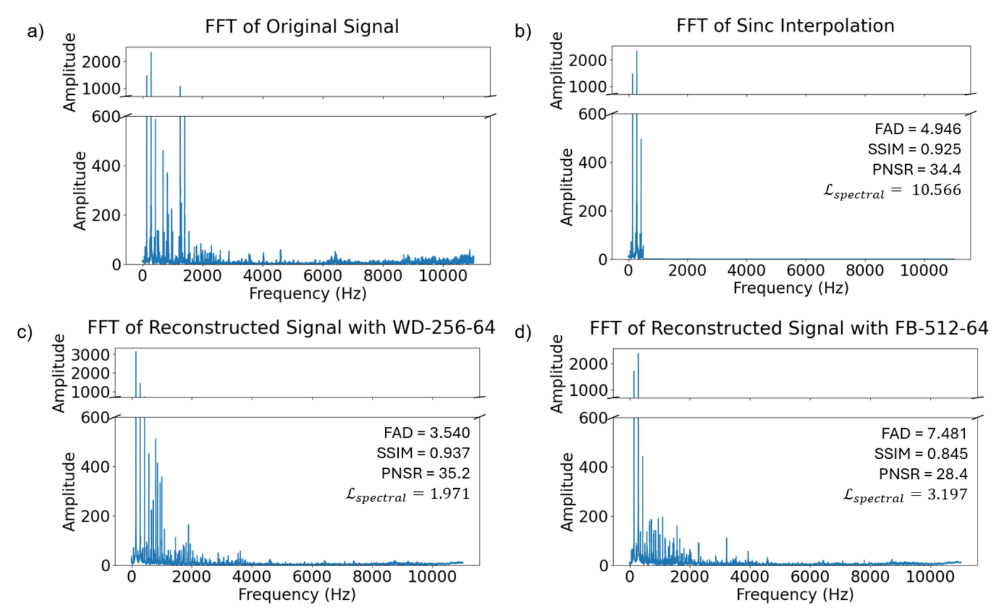

The problem
A digital twin is only as current as the sensor data it receives, and two things stop high-frequency data from reaching it:
- Network bandwidth. One vibration sensor sampling at 50 kHz produces over 4 GB an hour. A hundred of them need about 160 Mbps of raw data, more than the 100–300 Mbps that industrial Wi-Fi delivers in practice.
- Edge hardware. Industrial data-acquisition channels that sample at 50–100 kHz cost $1,000–5,000 each. The $50–200 microcontroller devices a plant can afford at scale capture much lower rates and miss the high-frequency signatures of tool wear and bearing faults.
Approach
I built one vector-quantized variational autoencoder (VQ-VAE) framework with two operating modes, one for each constraint:
- Downsampling mode (bandwidth). A good sensor captures 22.05 kHz audio. The encoder turns each one-second frame into entries from a learned codebook, so only short token indices cross the network, and the decoder rebuilds the full 22.05 kHz signal at the twin.
- Upsampling mode (hardware). A cheap edge device sends a 1 kHz signal. The model reconstructs a 22.05 kHz signal, including frequency content above the 500 Hz limit of the input.
I compared two ways of presenting the signal to the encoder: a five-band FFT frequency-band decomposition and a wavelet decomposition. I also tested five configurations of codebook size (256 or 512 entries) and latent dimension (64 or 128). Training combined a time-domain reconstruction loss, a spectral (FFT) loss and the usual VQ codebook and commitment losses. The data was the 4-hour designed CNC audio dataset (see the dataset project), cut into one-second frames, about 51,840 in total. Each model trained for 500 epochs (about 8 hours) on an NVIDIA RTX A6000 workstation.
Which mode to deploy: good sensors on a limited network use downsampling mode; low-cost sensors on an adequate network use upsampling mode; a mixed plant can use both, chosen per machine by how critical it is.
Results
Wavelet decomposition beat frequency-band decomposition in both modes, and the 256-entry codebook beat the 512-entry one. The best downsampling model reconstructed audio at 37.8 dB PSNR and 0.953 SSIM. In upsampling mode the model beat linear, cubic and sinc interpolation on PSNR, SSIM and Fréchet Audio Distance (3.54 vs 4.95 for sinc), and restored high-frequency content that interpolation cannot. Raw 22.05 kHz, 16-bit audio is 352.8 kbps; the upsampling mode needs only a 16 kbps stream from the edge device.
Figures










My role
First author. I designed the framework and both operating modes, implemented the decompositions and models, ran the configuration study and baselines, and wrote the paper with my advisors, Dr. Binil Starly and Dr. Ashif Iquebal.